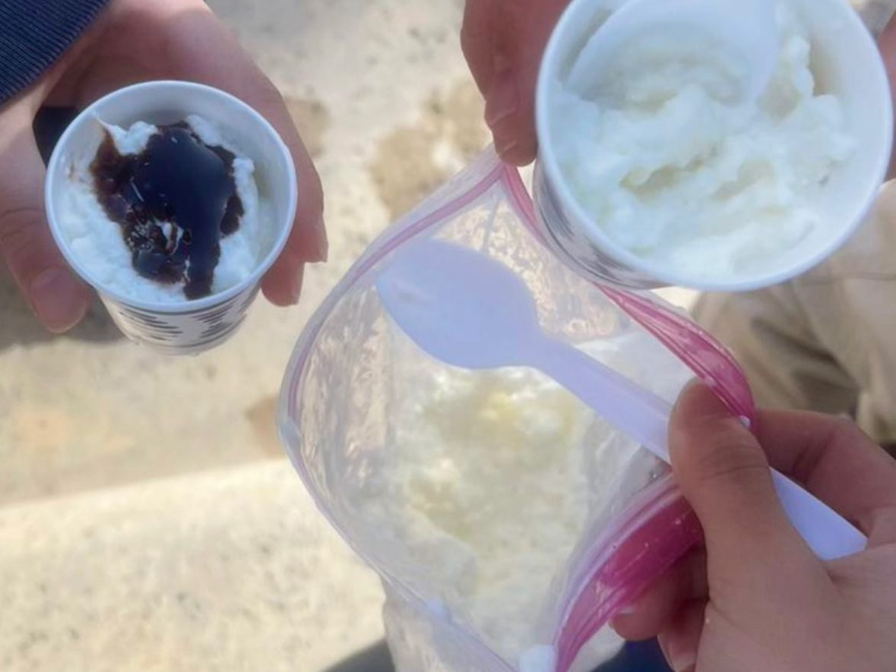
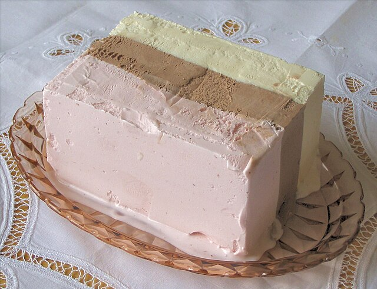

Materials
- 2 ziploc bags (1 small & 1 big)
- Ice
- Milk
- Sugar
- Any salt
- Measuring cups
- Towel (or equivalent)
- Optional: Vanilla or other flavorings
- Optional: Toppings or sauces
May 26th, 2025
Introduction
Worried that store bought ice cream may have “extra�components in them? Then this easy homemade recipe is the right one for you. We will explore how delicious ice cream can be made from simple and common ingredients!


The ingredients that you added are what commonly needed to make ice cream. Since ice cream is the “cooled version�of those ingredients, we need a way to make ice cream cool more quickly under the same temperature. That’s why salt is needed to lower the freezing point of ice (the temperature of ice melting into water), making the ice melt faster. This effect is called the “freezing point depression�
Freezing point depression, or
Since the process of melting is an endothermic process (absorbs heat from surrounding), the heat from the ingredients inside the small ziploc bag is absorbed by the ice. Hence, the ingredients will cool faster to make ice cream. That’s why you can make ice cream in only 5 minutes!!
You can also try replacing milk with other ingredients like juices, heavy cream, or yogurt. You can make a sorbet and other new types of ice cream by just simply switching up the main ingredient. Play around with what you have!
